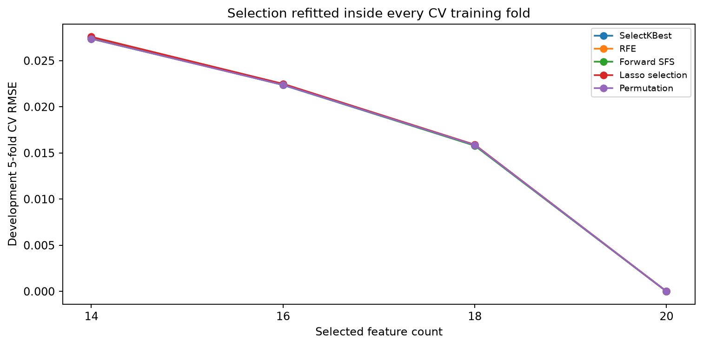
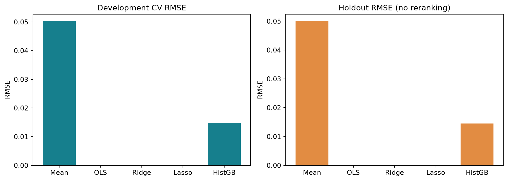
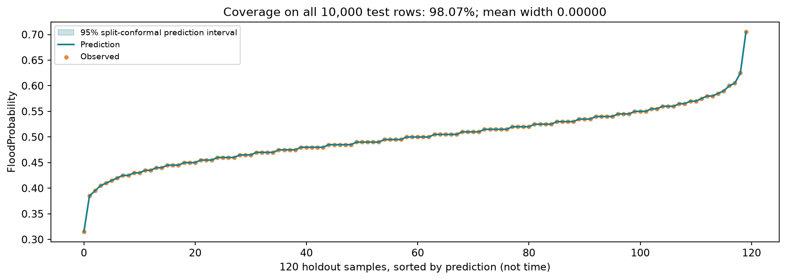
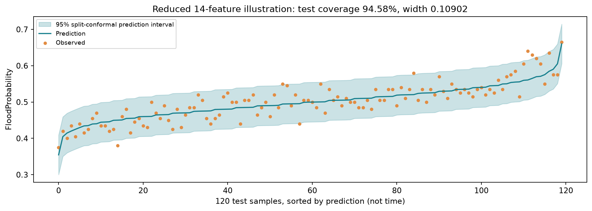
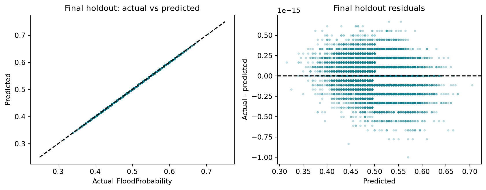
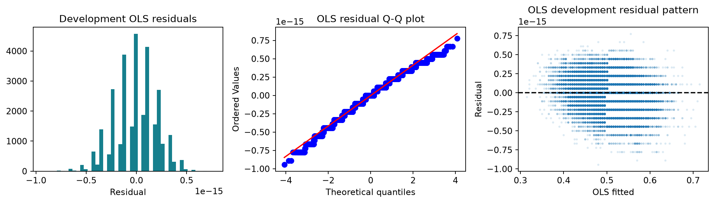

資料與實驗設計
50,000 筆資料：開發集 30,000／校準集 10,000／測試集 10,000。固定種子 42，特徵選擇與調參都限制在開發資料。
重要發現：此版本的目標幾乎等於 20 個特徵總和 × 0.005，因此完整線性模型的 R² 接近 1。這反映資料生成結構，不能當作真實洪水預測能力的證據。
來源：Kaggle Flood Prediction Dataset · CC0（上傳頁面標示）。原始外部來源、蒐集方法與地理覆蓋不明，合成性質未獨立驗證。
完整 20 特徵方案實際使用相同 OLS，並列最佳。Ridge / Lasso 的 Adjusted R² 以名目特徵數計算，不能視為有效自由度調整。
特徵選擇與模型比較

刪除特徵會遺失生成公式的一部分；完整模型最好是合理的實驗結果。
線性模型與非線性對照

HistGradientBoosting 僅為相同資料與切分的對照，不參與主要線性模型選擇。
單筆情境預測
輸入為資料集分數，未提供可對應的真實量測單位。
LIVE MODEL OUTPUT
模型方程式
係數由 Python 訓練後轉回原始尺度匯出；網頁不重新訓練模型。
95% 預測區間
Split conformal：模型只用開發集訓練，校準集絕對殘差的第 9,501 小值決定半寬。交換性假設下為邊際涵蓋率，並非每個情境皆保證 95%。
完整模型

完整模型殘差僅為浮點數誤差，區間幾乎退化成線；不能解讀成真實風險沒有不確定性。
14 特徵模型：區間示範

保留測試集：預測與殘差

回歸假設診斷

依開發集 CV MSE 排序，測試 MSE 不參與排名。點選列可載入該模型。
| 方案 | k | CV MSE | Test MSE | Test RMSE | Test R² |
|---|
CRISP-DM 六階段與作業進度
Business Understanding：以連續分數預測做為方法教學，無真實部署效益聲稱。
Data Understanding：核對 50,000 筆、20 特徵、缺值與重複；開發集揭露固定生成公式。
Data Preparation：先切分；Pipeline 處理補值與標準化。數值欄位不需要類別編碼。
Modeling：OLS、Ridge、Lasso、五種特徵選擇及 14/16/18/20 特徵比較。選擇器每折最多抽 2,500 筆以控制運算量，最後回歸用完整訓練折。
Evaluation：MAE、MSE、RMSE、R²、Adjusted R²、獨立校準預測區間。檢查五項假設，浮點數殘差下不強行解讀檢定。
Deployment：本頁展示同一開發模型，附 Python 模型與操作說明；沒有提交 Kaggle，沒有名次。
分析已完成。NotebookLM 研究摘要已由學生提供並核對；完整繳交狀態以報告及 submission_status.json 為準。